Kuskuam Church
Built in the 18th century by Empress Mentewab, Kuskuam Church was once both a church and a royal residence. Centuries later, the site is still alive — not only through its old walls and artifacts, but through the people who continue to care for it every day.
The priest who serves at Kuskuam also manages the small museum inside the compound. He welcomes visitors warmly, walking them through the history of the church and sharing stories that connect the past to the present. Surrounded by ancient manuscripts, crosses, paintings, and ceremonial objects, he spends his days protecting pieces of history that have survived for generations.
What makes Kuskuam feel special is not just its age, but the quiet sense of continuity within it. Prayers still echo through the church, visitors still gather to learn its story, and the work of preserving its history continues through the hands of those who remain devoted to the place. In many ways, Kuskuam is more than a historical site — it is a living space where faith, memory, and everyday life still exist side by side.
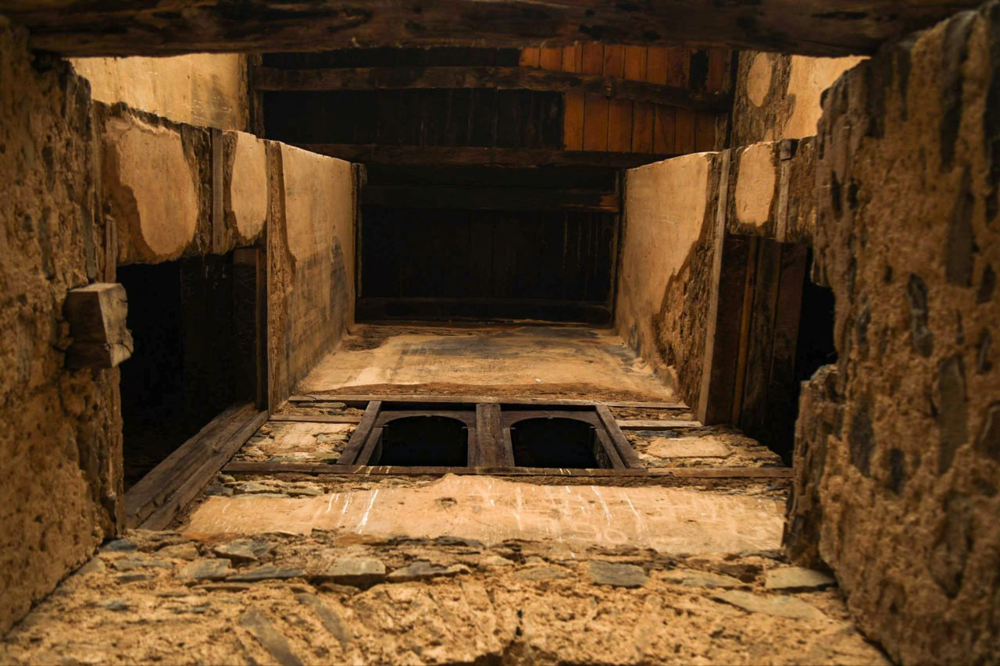

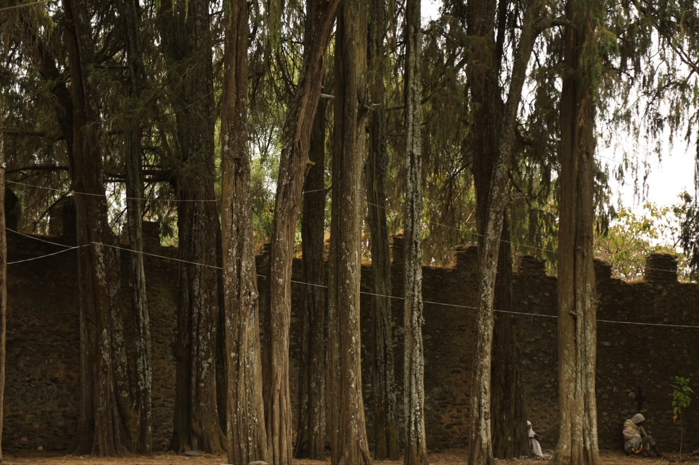
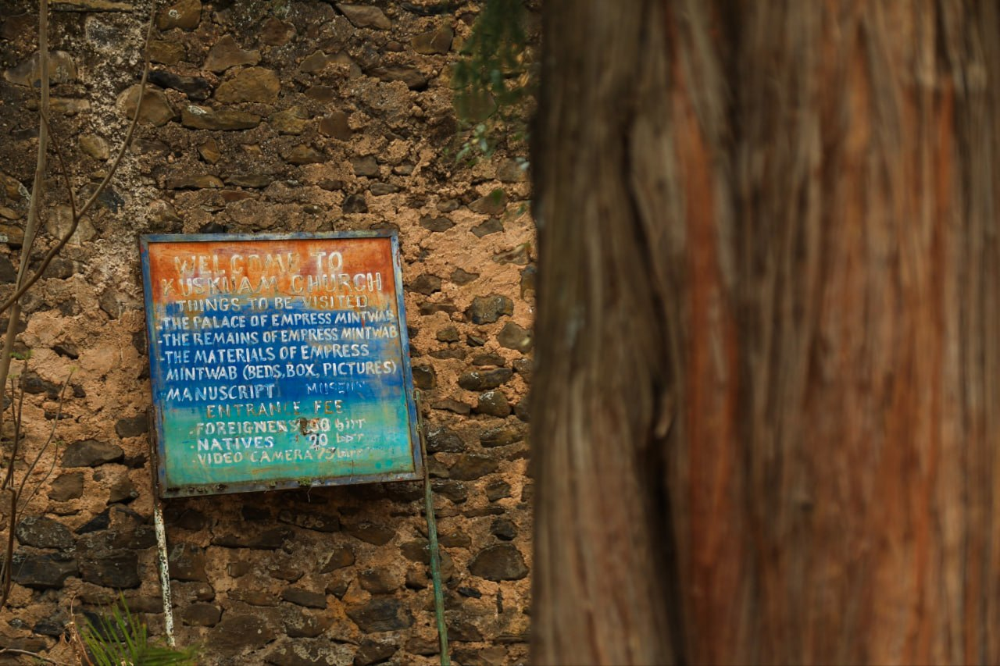
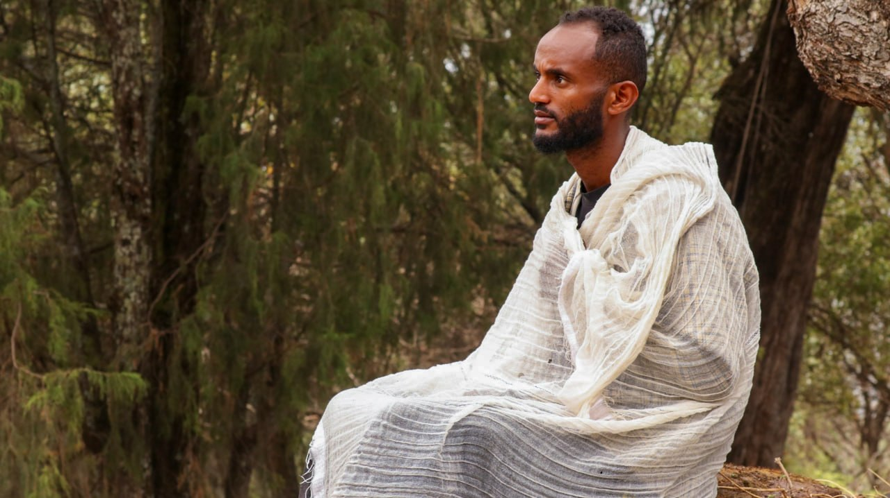
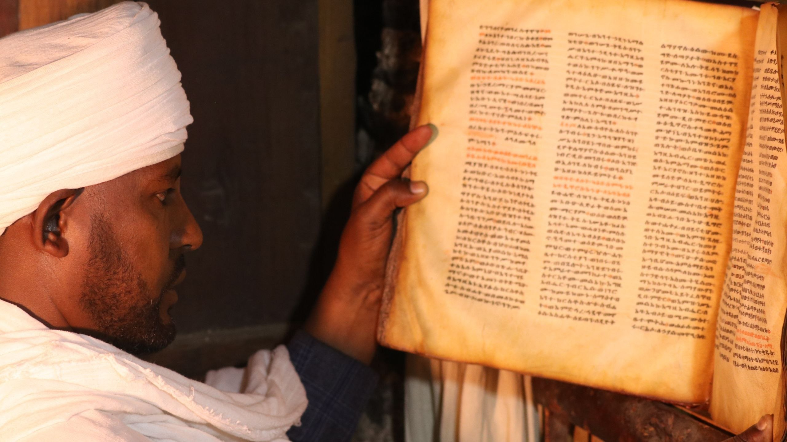
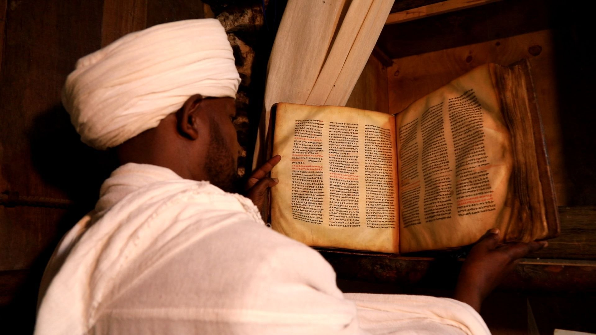
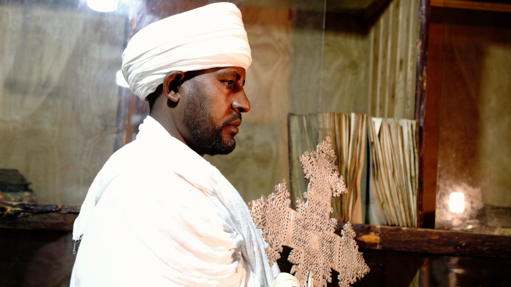
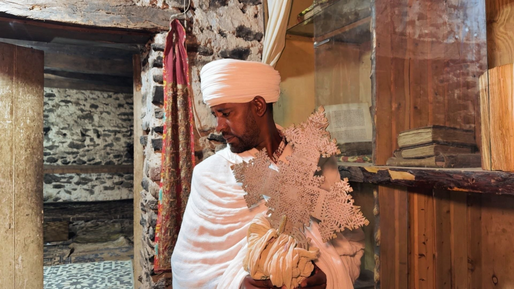
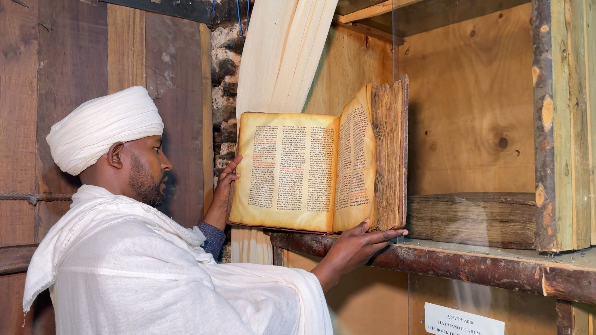
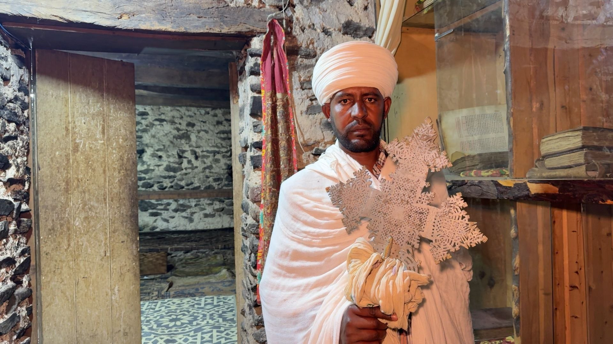

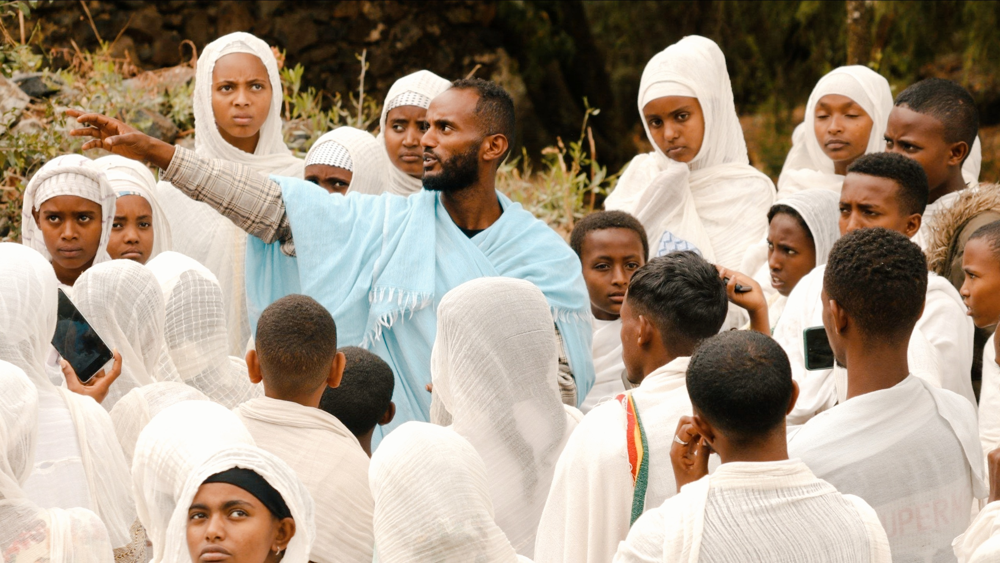
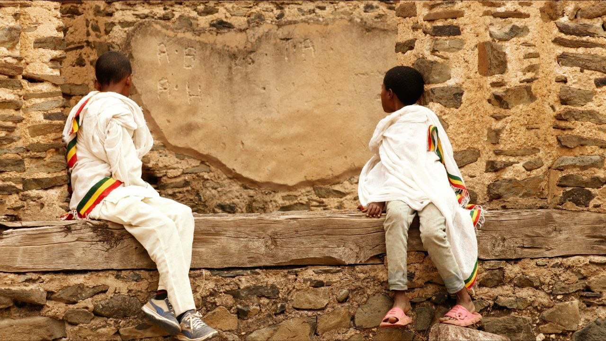